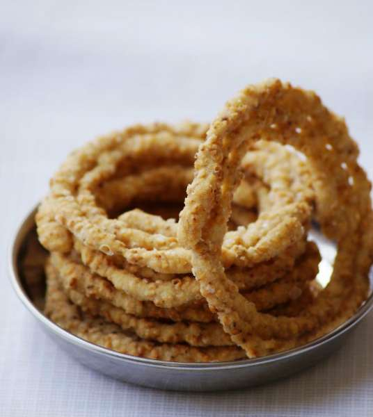
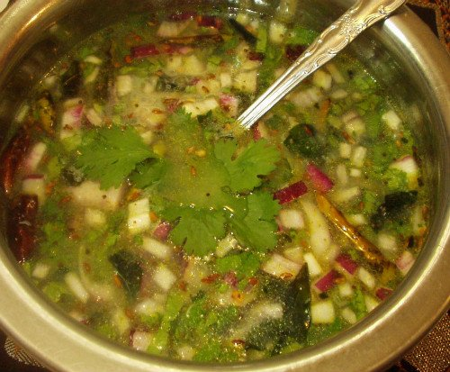
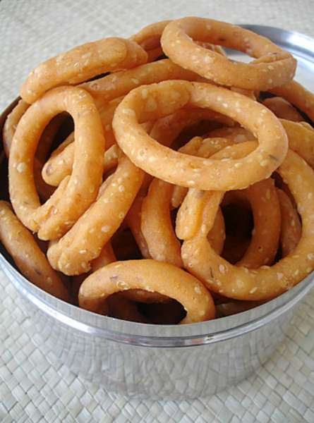

"The City of Nizams"
A city of contrasts, Hyderabad exudes an old-world charm of its own with the Old City (Charminar side), Hitech City (Cyberabad) and the other areas lying between the old and the new. The capital and the largest city of Telanaga, Hyderabad is home to stately mosques and noisy bazaars lined parallelly alongside swanky new office buildings and malls, and it is these very contrasts these glimpses into the city is rich past with inherent promises of an even better future –that make Hyderabad a city worth visiting. Maybe even more than once.
The city of pearls and biryani, Hyderabad is home to one of the most iconic landmarks - the Charminar. Translating to 'four minarets', the grand edifice is built entirely out of limestone and granite, with four minarets on four sides, each of them facing a different street. The Charminar stands in a labyrinth of lanes crammed with shops, markets, stalls and shoppers - one of the best places to shop for the authentic pearls and relish the tasty biryanis, skewer kebabs and haleem (the smorgasbord of food that Hyderabad is known for).
The other side of Hyderabad - HiTech City or Cyberabad - is a stark contrast to the Old City. The area teems with grand malls, pulsating clubs, sleek restaurants and hi-rise buildings of the every-growing multinationals. Between the old and new lie the popular city areas of Banjara Hills and Jubilee Hills flanked on the northeast by Secunderabad. Hyderabad and Secunderabad together are still referred to as the "twin cities", though they are practically one now.
Hyderabad pulsates with a spectacular mix of people and traditions. Make a journey through this mind-stirring metropolis and be ready to be amazed, frustrated, confounded and thrilled, all at once!
The entrance of Papi kondalu can be seen from Koruturu (West Godavari District).The original name for this hill range was ‘Papidi Kondalu’. Papidi is a rough translation for partition in Telugu. Since this range looks like a well designed partition that splits river Godavari, this name was coined. There is also another idea that the range looks like a partition of a typical Indian Woman’s hair line. In due course, it settled for ‘Papi Kondalu’.Papikondalu Andhra Pradesh – “Papi kondalu” or the “Papi Hills” are series of mountain range that are located Rajahmundry in West Godavari District of Andhra Pradesh. Papikondalu Mountain range runs along River Godavari, one of the largest and vivacious rivers in India. The mighty river narrowing and
passing with twists and turns along the Papi Hills is every visitor’s delight. Papikondalu mountain range spreads over a vast area, covering about three districts of East Godavari, West Godavari and Khammam Districts.To get the real essence of Papikondalu, one has to go for the boat journey either from Rajahmundry,Bhadachalamr. There are small motor boats with capacity of five including the rider or River Streamers carrying about fifty to sixty people. The journey takes about 8 hours and the adventure begins the moment you step on to the boat. The ups and downs of the river water, the drifting sand, the cool breeze, small fish that can be spotted in the clean water and the fresh air from the Papikondalu Hills, give you one of the best experiences to travel.Come any season except summer, these hill ranges offer one of the best places to visit in AP in terms of scenic beauty animals, , bird species, which are found here.The flooding river (especially during rainy season- July to September) gives you a thrilling experience to travel. Sometimes the increased water level in the river makes the boat journey precarious. It is the skill and experience of the local sailors, who makes your journey most memorable.There are several sights that fall on the way like Perantalapalli and Pattiseema that are must-see. Several tribal communities have made their dwellings on these hills whose main occupation is agriculture, fishing or handicrafts-making. If you are a real adventure lover with a group of more than five and not with elderly people, one of the fascinating things you can do is camp at the river side overnight.
Originally known as Orugallu which means ‘one stone’, Warangal was ruled by the Kakatiya dynasty. It is believed that the entire town was carved out on a single rock. The Kakatiyas built many monuments in the state which include iconic fortresses, gateways and temples. Among the most famous monuments of Telangana, the Thousand Pillar Temple in Hanamkonda, was built by the Kakatiya King Rudra Deva in 1163 AD in Chalukyan style of temple architecture. The city of Warangal was also described in detail by Marco Polo during his visit to the country. The city of Warangal is well connected by road as well as rail. The city is a cluster of three towns and is popular for many attractions. While visiting Warangal, one should definitely stop by the beautiful Khush Mahal located near the Warangal Fort. The symbol of a glorious past, it is a masterpiece built by Shitabh Khan.
Warangal is a city in the south Indian state of Telangana. It was the capital of the Kakatiya dynasty from the 12th to 14th centuries, and many intricately carved monuments from this period still stand. Among them are the ruins of 13th-century Warangal Fort and the Thousand Pillar Temple, built in 1163. Set on a lake, Bhadrakali Temple dates to the 7th century and is dedicated to the Hindu goddess Kali. Warangal is the fifth largest city of the state and a very important tourist place with an enchanting architectural work which attracts many people from different parts of the world. The famous tourist places in Warangal are—thousand pillared temple (built by the Kakatiyas and it is dedicated to Lord Shiva, Lord Vishnu and Lord Surya); the Bhadrakali temple (dedicated to Goddess Bhadrakali); Ramappa temple (where Lord Shiva is worshipped). Some other monuments of Warangal include Warangal Fort, a historical monument which dates back to the 13th Century and Ghanpur group of temples. Recognized as one of the best heritage cities of India, Warangal is situated 145 km away from Hyderabad in Telangana state. The fifth largest city in the state, its name is derived from the word Orugallu: Oru, which means one and Kallu means stone. The city was also known as Ekasila Nagaram.
Warangal was the capital of the Kakatiya kingdom which ruled between 12th and 14th century. Prola Raja of Kakatiya is credited with built the town in the 12th century. The Kakatiyas, who ruled for more than 200 years, have left many grand monuments and architectural marvels like the famous Warangal Fort, Swayambhu Temple and many other ancient structures. In February 2013, Warangal was accorded World Heritage city status by UNESCO. Government of India’s Tourism Ministry also recognized the city as the Best Heritage City along with Jaipur.
With several temples known for their outstanding architecture and splendid history, known for their granite quarries made of blue granite, Warangal attracts many tourists. Warangal Fort, spread over a radius of 19 km between Warangal and Hanamkonda is literally and metaphorically the biggest attraction of the city . Constructed in the 13th century during the reign of King Ganapati Deva, the fort is most famous for its intricately carved arches and pillars and four large stone gateways.
Telangana is located in the southern part of India and is renowned for its natural attractions, temples, palaces, forts and other heritage sites. The rich cultural heritage of the state makes it one of the most visited tourist destinations in South India.
According to the Telangana State Tourism Development Corporation, about 92.8 million and 0.318 million domestic and international tourists, respectively, visited the state in 2018. This tourist-friendly state has a large number of big and small accommodation options including budget, luxury and heritage hotels, homestays and resorts.
History of Telangana
Telangana’s history has been shaped by many great dynasties like the Mauryas, Satvahanas, Chalukyas and Kakatiyas. The region came under the dominion of the Delhi Sultanate in the 14th century, Bahmani Sultanate in the 15th century and Qutb Shahis in the 16th century. The Qutb Shahi kingdom fell into the hands of the Mughal emperor, Aurangzeb in 1687.
In 1712, Qamar-ud-din Khan became the administrator (Nizam-ul-Mulk) of the region. Later, he took the name Asaf Jah, laying the foundation of what came to be known as the Asaf Jahi dynasty. He named the region, Hyderabad Deccan, and his lineage came to be known as the Nizams of Hyderabad. When the colonial powers established their control over the country, the Nizams obtained their support and kept ruling Hyderabad under their protection.
After India’s freedom, the then Nizam wanted Hyderabad State to remain independent. But the Indian Government annexed it in 1948 with ‘Operation Polo’. In 1956, Telangana region was combined with Andhra State to form Andhra Pradesh. In the years that followed, there were many major movements to revoke the merger. Consequently, the state of Telangana was officially formed from the northwest part of Andhra Pradesh on 2nd June, 2014.
Telangana shares its border with Chhattisgarh in the east, Andhra Pradesh in the south and east, Karnataka in the west, and Maharashtra in the north. Located on the Deccan Plateau, the state’s landscape is dotted with mountain ranges, hills, and dense forests. Krishna and Godavari are the two major rivers flowing through the state.
The climate of Telangana is hot and dry. Summers are scorching hot while winters are mild and dry. The best time to visit Telangana is between September and March.
Iconic Monuments: Charminar, Qutub Shahi Tombs, Paigah Tombs, Kakatiya Kala Thoranam
Mrugavani National Park, Eturnagaram Wildlife Sanctuary, Kawal Tiger Reserve, Kinnerasani Wildlife Sanctuary
Museums:
Salar Jung Museum, Telangana State Archaeology Museum, BM Birla Science Museum, Heritage Jail Museum, Sudha Cars Museum
Other Attractions:
Ramoji Film City, Wonderla, Manjeera Dam, Ananthagiri Hills
Telangana Cuisine
The cuisine of Telangana includes both vegetarian and non-vegetarian dishes. Some of the famous dishes of Telangana are Sarva Pindi, Pachi Pulusu, Golichina Mamsam, Hyderabadi Biryani, Sakinalu, Haleem, and Gongura Chutney. Malidalu, Garijalu, Qubani ka Meetha, Ariselu, and Kobbari Pappu Payasam are some must-try traditional desserts.
Telangana Cuisine is typically spicy and ingredients such as tamarind, sesame seeds, red chillies and asafoetida are widely used in a variety of vegetarian and non-vegetarian dishes. Roselle is a staple item used in making curries and pickles. Sources state that while in Telangana, millet bread/roti is a staple diet its neighbouring state of Andhra prefers rice. Hyderabad is the shared capital of Andhra Pradesh and Telangana and is obviously wildly popular for its biryanis and Karachi biscuits. But there is so much more to Telangana Food that many of us are completely unaware of.
So here is a list of some of the Telangana famous food:
Sarva Pindi
Malida

chakinalu
Garijalu

Pachi Pulusu
Golichina Mamsam
HyderabadiChickenBiryani

Chegodilu
Polelu
Qubani ka Meetha
Shopping in Telangana
Telangana has a lot of interesting things you can carry back as souvenirs including:
The Transport Department of Telangana is set up for enforcement of the provisions of the Motor Vehicle Act, 1988 and Telangana Motor Vehicles Taxation Act, 1963 and the rules under it. Though Telangana has a good rail and air transport system, yet road transport is the most important one. It helps the people especially in rural areas to travel from one place to another with much ease.
The Transport Department of Telangana is controlled by the Transport Commissioner who is the Head of the Transport Department and is helped by an Additional Commissioner and four Joint Commissioners, three Regional Transport Officers and one Regional Transport officer
Six national highways run through the state of Telangana making commuting between cities an easy affair.NH7 is the longest national highway in Telangana that enters the state from Adilabad in the north and goes till Mahbubnagar before exiting the state on its South. Nizamabad, Medak, Rangareddy and Hyderabad are the other important districts that NH7 crosses. The other important highways present in the state include NH16 that passes through Adilabad, Karimnagar and Nizamabad and NH9 passing through Nalgonda, Hyderabad and Medak. NH202 stretches from Hyderabad to Warangal. NH221 is another important national highway that passes through Khammam.
Railways in Telangana
The districts of Telangana are well connected by rail route that run all across the state. It not only has a well developed inter-state but also intra-state rail route. Since the state was earlier part of Andhra Pradesh, the major cities of Telangana are already connected with the important cities of India.
Airports in Telangana
Transportation is an important facet for the development of any place. While the transportation facilities in Telangana as far as road transport is concerned, is being taken care of by Telangana State Road Transport Corporation buses as well as APSRTC (Andhra Pradesh State Road Transport Corporation) buses, air transport needs a careful revamping in the days to come. The government has come up with new and innovative plans which will connect Telangana with neighbouring states and places abroad in a much better way.
Going by what the aviation experts proclaim, since it is not feasible to have more large airports in Telangana too soon, it might be a good idea to look forward for a small airport every few hundred kilometres which seems possible and is a public requirement too. This would improve connectivity and aid in investment and development even in remote areas of this newly formed state.
International airports require minimum of 9,000 metres of runway. There are around 16 airstrips in Andhra Pradesh and Telangana - some functional while others redundant.
Done by: Name:Suryadevara Laxmi
Roll Number:B20CN029


.jpg)